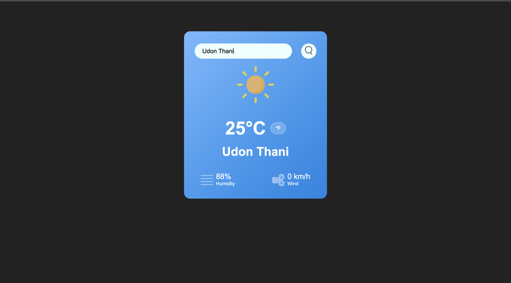
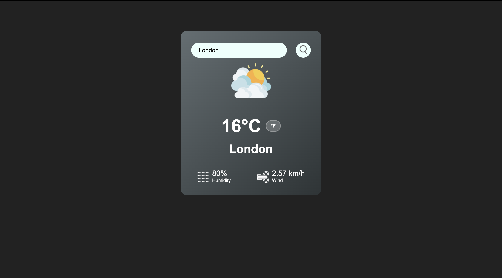
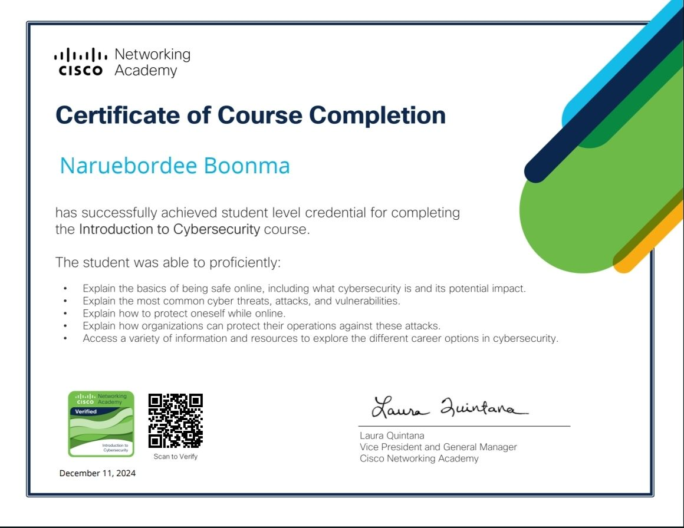
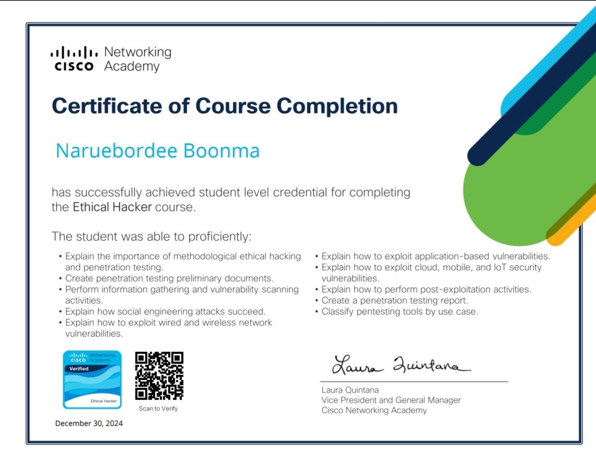

1. แนะนำตัว (Introduction / Profile)
ชื่อ: นฤบดี บุญมา อายุ: 20 นักศึกษาชั้นปีที่ 3 คณะวิทยาศาสตร์ สาขาเทคโนโลยีสารสนเทศ มหาวิทยาลัยราชภัฏอุดรธานี สนใจด้าน Web Development, Data Science และ AI
Soft Skills: การสื่อสาร, การทำงานเป็นทีม, การแก้ปัญหา
2. ทักษะ (Skills)
- Programming: Python, Java, HTML/CSS, JavaScript, React, PHP
- AI & Data: TensorFlow, scikit-learn,SQL
- Tools: Git, VS Code, Figma
3. ผลงาน (Projects / Portfolio)
- เว็ปแอปแสดงสภาพอากาศ เขียนด้วย JavaScript Link: https://birdie-1.github.io/js-weather-app/


4. การศึกษา (Education)
- ระดับประถมศึกษา สำเร็จการศึกษาจากโรงเรียนอนุบาลอุดรธานี (2554-2559)
- ระดับมัธยมศึกษาตอนต้น สำเร็จการศึกษาจากโรงเรียนอุดรพิทยานุกูล (2560-2562)
- ระดับมัธยมศึกษาตอนปลาย สำเร็จการศึกษาจากโรงเรียนอุดรพิทยานุกูล แผนศิลป์-ภาษา (2563-2565)
- ระดับอุดมศึกษา กำลังศึกษาที่คณะวิทยาศาสตร์ สาขาเทคโนโลยีสารสนเทศ
มหาวิทยาลัยราชภัฏอุดรธานี (2566–ปัจจุบัน)
5. กิจกรรมและผลงานอื่น ๆ (Activities / Achievements)
- ผ่านการอบรมออนไลน์ เรื่อง "Networking" จาก Cisco Networking Academy
- ผ่านการอบรมออนไลน์ เรื่อง "Cybersecurity" จาก Cisco Networking Academy


6. ติดต่อ (Contact)
Email: narueborde@gmail.com
GitHub: github.com/Birdie-1
Facebook: https://www.facebook.com/share/1A4sr9g8nV/
อำเภอเมือง จังหวัดอุดรธานี
7. เป้าหมายในอนาคต (Career Interest)
สนใจทำงานในสาย Full Stack Developer หรือ Data Scientist